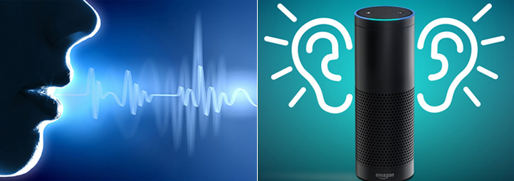

Acoustic Recognition
음성/음향 인식 기술은 AI의 발전과 더불어 괄목할 만한 성장을 이루었습니다. 특히 휴대폰 등 개인기기의 음성인식은 이미 보편화되었습니다. 그러나 현재의 음성인식 기술은 복잡하고 주변 소음이 많은 현실의 환경에서는 정확도가 많이 떨어져 사용을 잘 못하는 것이 현실입니다. 이는 칵테일파티 효과(Cocktail Party Effect)로 잘 알려진 음향인식에 있어서의 본질적인 문제입니다. Human Lab에서 수행하는 음향인식 테마는 칵테일 파티에 참여한 인간처럼 주변 잡음이나 울림이 있는 상황에서도 어느 소리인지를 잘 구분하고, 그 위치를 인식하고, 듣고 싶은 소리만 들을 수 있게 하는 연구를 진행합니다. 특히 여러 귀(마이크로폰 어레이)가 아닌 인간과 같은 두 귀 (stereo)로 이 모든 것을 가능하게 하는 도전적인 연구를 수행하고 있습니다.
기본적인 착안점은 음원에서 출발한 음향 신호가 대뇌에서 인지되기까지의 물리적인 전 신호 전달 과정을 모사하는 것입니다. 공간상의 음향의 기계적 전달특성(전달, 반사, 울림, 감쇄 등)과 머리 표면과 귓바퀴에서의 인체 음향 전달(Head Related Transfer Function)을 거쳐 귀에 도달하여 외이, 중이, 내이를 통과하여 청신경을 거쳐 (신경음향: Human Auditory System) 대뇌에서 인지(AI) 하는 전과정을 하나의 음향신호 전달+인지 시스템으로 통합 모델링하여, 인간이 소리를 듣는 프로세스에 따라 음향을 인식하는 방법에 대해 연구를 수행하고 있습니다. 이를 통해, 음향이벤트인식(Event Classification), 음원위치추정(Source Localization), 그리고 음원추출(Source Separation)의 세가지 기능에 집중해서 연구를 수행합니다. 이는 최근 개발한 기침 카메라와 같이 일상에서 발생하는 음향의 의미와 그 위치를 파악하는 기술에 사용하고 있습니다. 휴먼케어로봇에 적용하여 노인들이 겪을 수 있는 여러 상황 (기침, 코골이, 무호흡증, 낙상, 그릇깨짐, 일상, 침입, 방문객 등)을 음향신호를 통해 로봇이 인지하고 도움을 줄 수 있는 기술을 연구하고 있습니다. 또한 제조업이나 발전소에서 발생하는 여러 음향신호를 통해서 고장을 조기에 진단할 수 있는 기술개발도 수행하고 있습니다 (Acoustic Signal based Diagnosis and Health Monitoring).
High-dynamic range, directional sound signal processing for robust and accurate sound recognition
Acoustic recognition with high-dynamic range sound transducer like human ear
